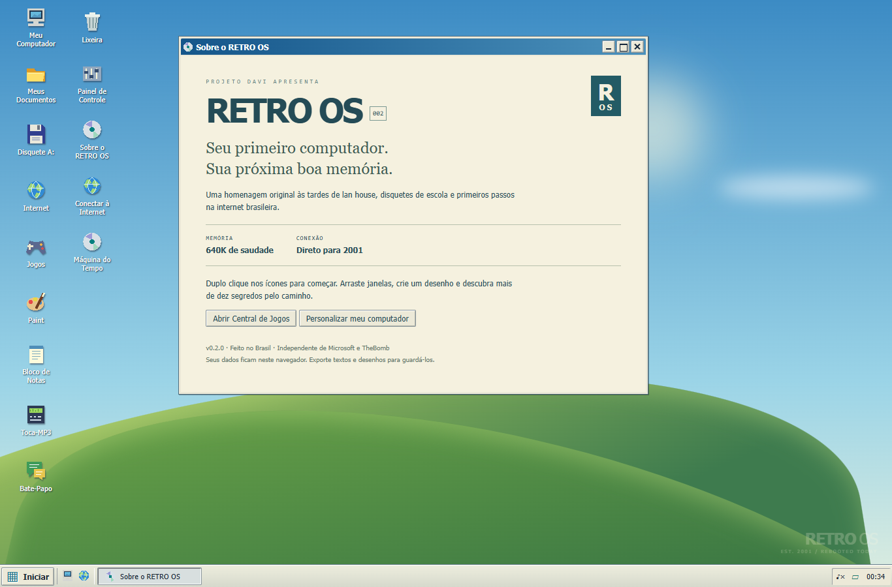
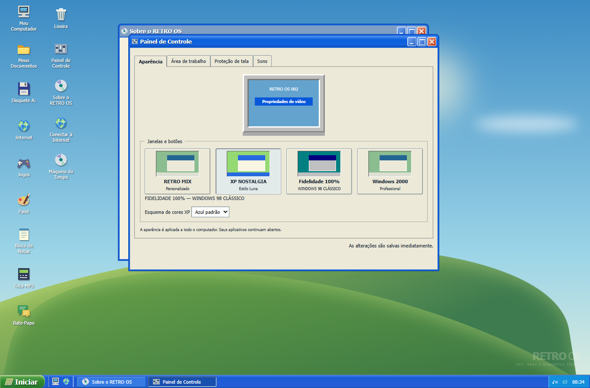
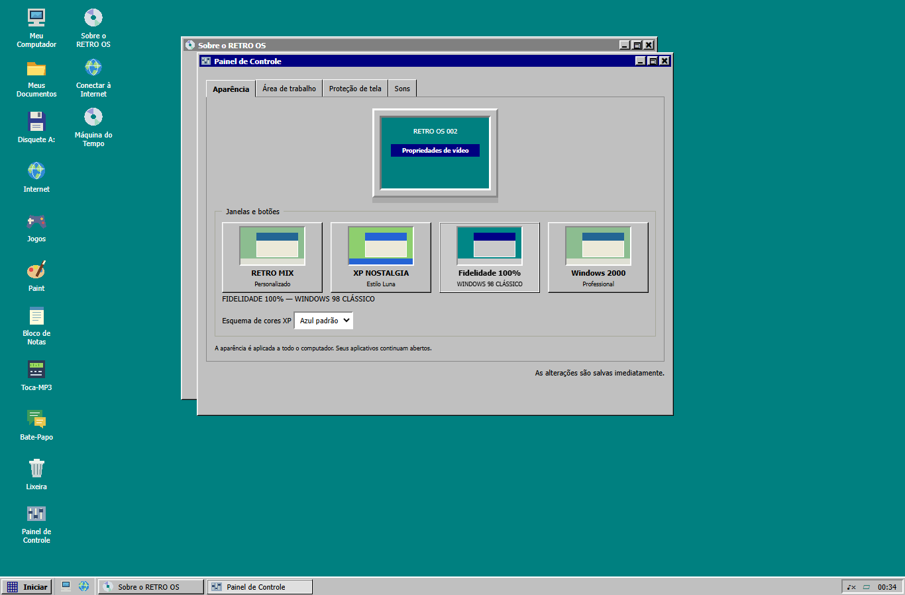
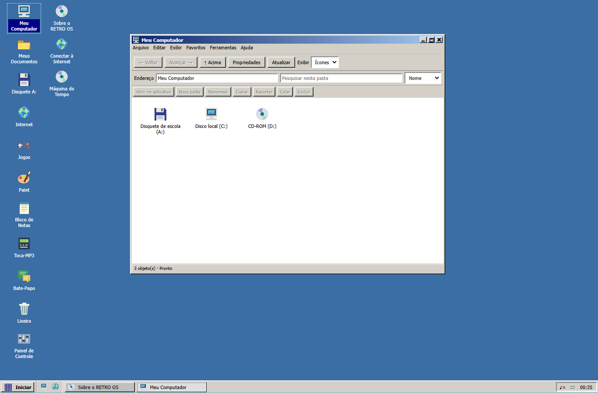
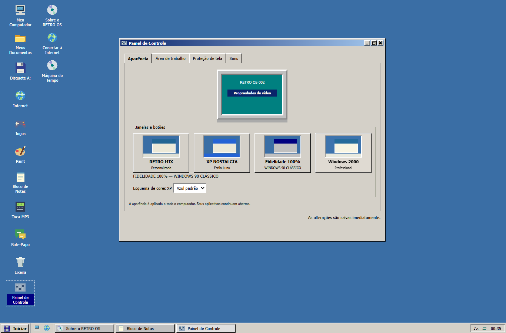
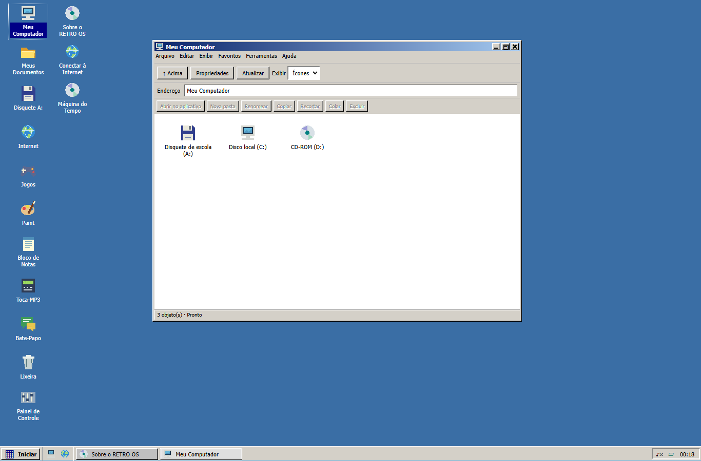
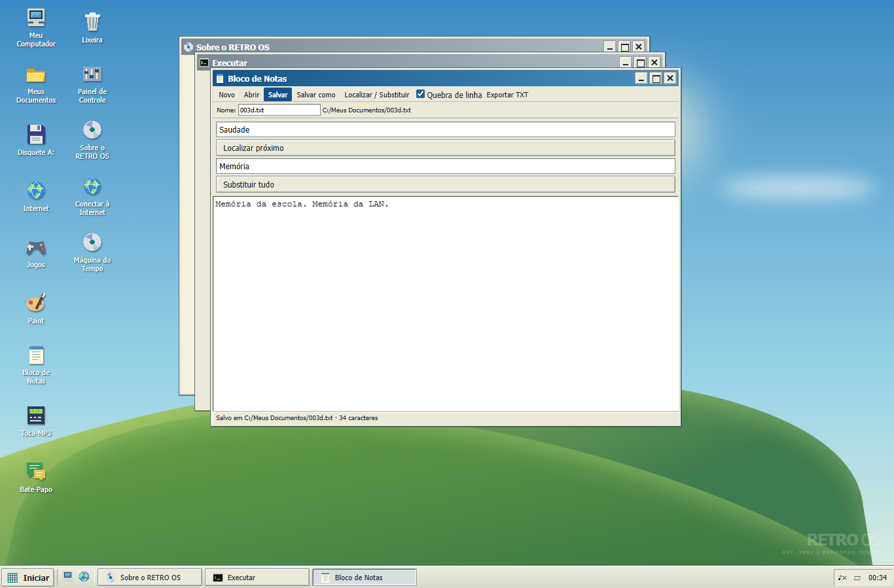
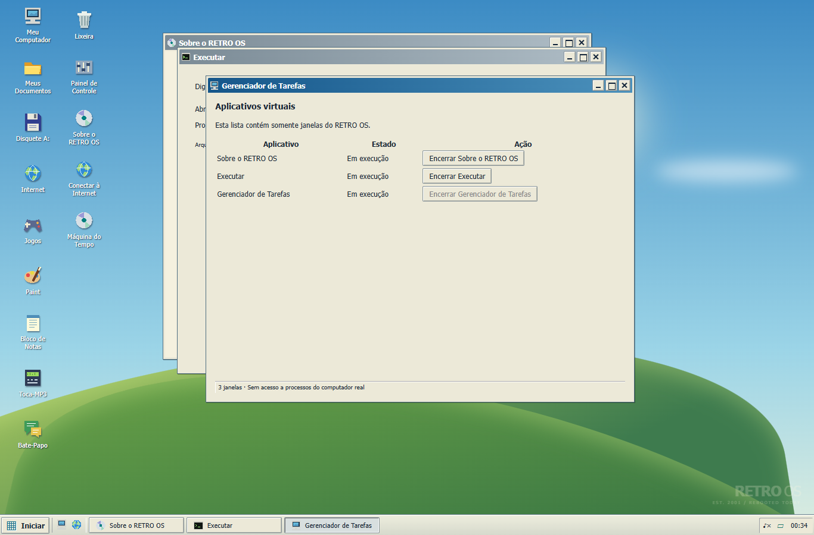
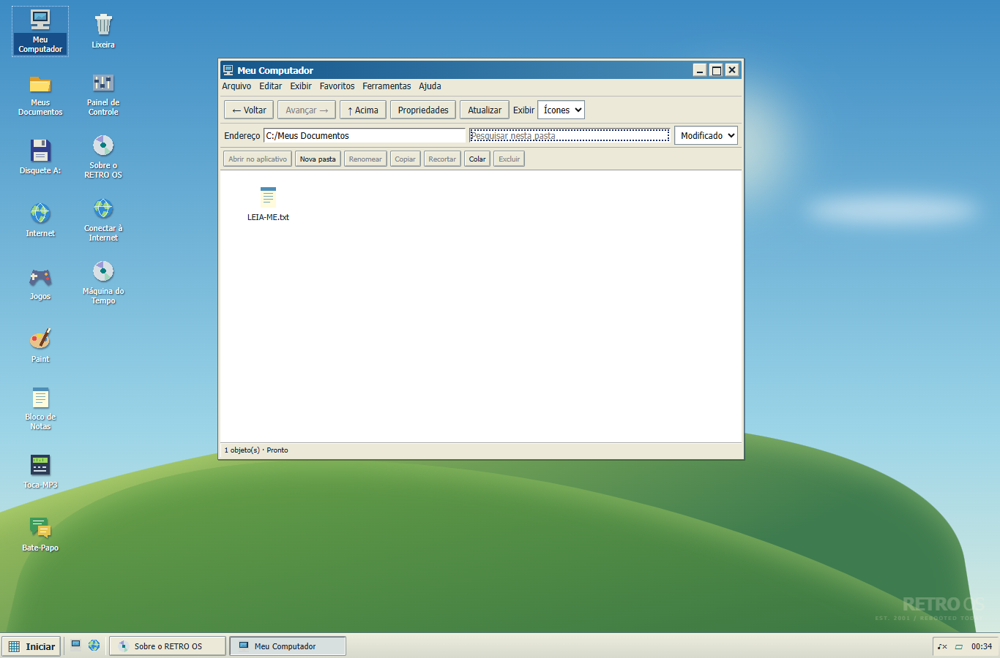
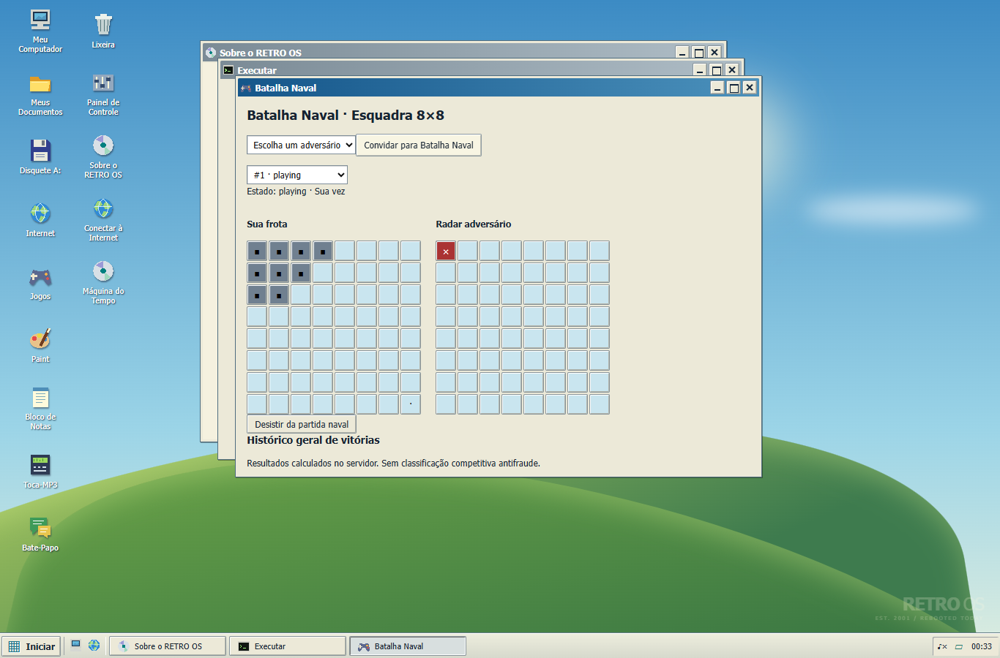

003D — capturas reais, entrega parcial
Depois: regressão final. Antes: checkpoint 003C preservado. Não representa equivalência histórica.
003D — retro-mix.png
003D — xp-nostalgia.png
003D — fidelidade-100.png
003D — 003c/chrome-windows2000-explorer.png
003D — 003c/chrome-windows2000-settings.png
Antes — Windows 2000 no checkpoint 003C

chrome-editor.png
chrome-tasks.png
chrome-explorer.png
naval-real.png